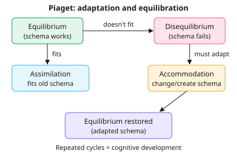

A-level Psychology Year 13 · Topic 5
Cognition and development
This topic looks at how children's thinking develops, and how they come to understand other people.
We will compare Piaget, Vygotsky and Bruner, test Piaget's claims with Baillargeon's research, and apply the theories to education.
Then we study social cognition: Selman's levels of perspective-taking, theory of mind and autism, and the mirror neuron system.
- 8 subtopics
- 202 questions
- Free: 5.1 notes and 10 questions
In this topic
- 5.1Piaget's theory of cognitive development: stages and schema, assimilation, accommodationFree below · 33 questions
- 5.2Vygotsky's theory (zone of proximal development) and Bruner's scaffoldingOpen in Full Marks · 26 questions
- 5.3Baillargeon's research on early infant abilities and evaluation of PiagetOpen in Full Marks · 27 questions
- 5.4Applications of Piaget, Vygotsky and Bruner to educationOpen in Full Marks · 30 questions
- 5.5Development of social cognition: Selman's levels of perspective-taking and the role of social experienceOpen in Full Marks · 22 questions
- 5.6Theory of mind and Baron-Cohen's Sally-Anne testOpen in Full Marks · 25 questions
- 5.7Theory of mind and autism: Baron-Cohen's extreme male brain theoryOpen in Full Marks · 20 questions
- 5.8The mirror neuron system and its role in social cognitionOpen in Full Marks · 19 questions
5.1 · Free notes
Piaget's theory of cognitive development: stages and schema, assimilation, accommodation

Key points
- Piaget proposed a constructivist stage theory: children actively build their own understanding and pass through four universal, invariant stages in a fixed order. Each stage is a qualitatively different way of thinking, not just more knowledge.
- A schema is a mental framework or unit of knowledge about the world. Babies are born with innate reflex schemas (e.g. sucking, grasping), which become more complex with experience.
- Assimilation is fitting new information into an existing schema without changing it, e.g. a toddler calling a cow 'dog' because it has four legs.
- Accommodation is changing an existing schema, or creating a new one, when new information does not fit. This is how schemas become more accurate.
- Equilibrium is a state of cognitive balance in which schemas explain experience. New experiences that don't fit cause disequilibrium, which is unpleasant and motivates change.
- Equilibration is the process of restoring balance through assimilation and accommodation. Piaget saw it as the driving force of cognitive development.
- Sensorimotor (0-2 years): infants learn through senses and actions. Object permanence, knowing objects exist when out of sight, develops at about 8 months.
- Pre-operational (2-7 years): symbolic thought (language, pretend play) appears, but thinking is limited by egocentrism, centration, animism and failure to conserve.
- Concrete operational (7-11 years): children think logically about concrete objects. They can conserve, decentre and understand class inclusion, but struggle with abstract ideas.
- Formal operational (11+ years): abstract and hypothetical thinking, systematic problem solving and hypothetico-deductive reasoning.
- Key evidence: Piaget and Inhelder's (1956) three mountains task, where pre-operational children chose their own view and so showed egocentrism, plus conservation tasks. Educational implications are readiness and discovery learning.
In more detail
- Worked example: a child with a 'bird' schema sees a bat and calls it a bird (assimilation). When told bats are mammals, they build a new 'bat' schema (accommodation).
- Horizontal décalage: conservation appears at different ages for different materials, roughly number at 6–7, mass at about 7 and volume at about 11, even within the same stage.
- Class inclusion: shown 7 dogs and 3 cats and asked 'Are there more dogs or more animals?', pre-operational children often answer 'more dogs'.
- 'Naughty teddy': McGarrigle and Donaldson (1974) found about 62% of 4–6-year-olds conserved number when a teddy 'accidentally' messed up the counters, compared with about 16% when an adult changed them on purpose.
- Exam tip: learn one key ability and one limitation per stage, e.g. pre-operational: symbolic play (ability), egocentrism and failure to conserve (limitations).
Practice
Piaget's theory of cognitive development: stages and schema, assimilation, accommodation: 10 questions
Pick an answer to check it, or open the answer for the explanation.
1. A 4-year-old says a tall thin glass holds more juice than a short wide one after watching the same juice poured. Which Piagetian stage is this child most likely in?
- Sensorimotor
- Concrete operational
- Formal operational
- Pre-operational
Show answer
D: Pre-operational. Failure to conserve (centring on height) is typical of the pre-operational stage (2-7). Concrete operational children (7-11) can conserve.
2. Which definition of assimilation is correct in Piaget's theory?
- Copying behaviour modelled by another person
- Changing a schema to fit new information
- Fitting new information into an existing schema
- A state of balance between schemas and experience
Show answer
C: Fitting new information into an existing schema. Assimilation means fitting new information into an existing schema without altering it. Changing the schema is accommodation.
3. A child with a 'dog' schema calls a cow 'dog'. Told it is a cow, she makes a new 'cow' category. Which process has just occurred?
- Accommodation
- Centration
- Assimilation
- Object permanence
Show answer
A: Accommodation. Creating a new schema because the old one did not fit is accommodation. Calling the cow 'dog' earlier was assimilation.
4. At roughly what age does Piaget claim object permanence develops?
- About 7 years
- About 8 months
- From birth
- About 3 years
Show answer
B: About 8 months. Piaget argued object permanence emerges at about 8 months in the sensorimotor stage, when infants search for hidden objects.
5. Which description best fits disequilibrium?
- A child copies a more skilled peer
- Existing schemas explain every new experience
- A child has mastered conservation
- New experience cannot be explained by current schemas
Show answer
D: New experience cannot be explained by current schemas. Disequilibrium is an uncomfortable imbalance when schemas cannot explain experience. It motivates assimilation or accommodation.
6. The three mountains task (Piaget and Inhelder, 1956) was designed to assess which feature of pre-operational thinking?
- Object permanence
- Conservation
- Egocentrism
- Class inclusion
Show answer
C: Egocentrism. Children had to say what a doll saw from another position. Choosing their own view showed egocentrism, i.e. difficulty taking another perspective.
7. According to Piaget, between which ages does the concrete operational stage occur?
- 11 years and over
- 7-11 years
- 2-7 years
- 0-2 years
Show answer
B: 7-11 years. Concrete operational runs from about 7 to 11 years. Logic develops but is limited to concrete, real objects.
8. A 13-year-old tests several hypotheses systematically to find which factors affect a pendulum's swing. Which stage does this show?
- Sensorimotor
- Formal operational
- Concrete operational
- Pre-operational
Show answer
B: Formal operational. Systematic, hypothetico-deductive reasoning about abstract variables is characteristic of the formal operational stage (11+).
9. Which statement about Piaget's stages is correct?
- Children are born in the concrete stage
- Stages can be skipped with enough teaching
- Children pass through them in a fixed order
- Stages differ by culture in their order
Show answer
C: Children pass through them in a fixed order. Piaget claimed an invariant sequence: all children pass through the stages in the same order, though the pace may vary.
10. A 5-year-old says a spread-out row of 6 counters has more than a compact row of 6, focusing only on length. Which term describes this?
- Animism
- Equilibrium
- Accommodation
- Centration
Show answer
D: Centration. Centration is focusing on one salient feature of a situation (length) while ignoring others (density), preventing conservation.
Keep going in Full Marks
Full Marks has 33 questions on Piaget's theory of cognitive development: stages and schema, assimilation, accommodation (23 more than here), set out in practice levels. You also get notes and 3D models for all 8 subtopics of Cognition and development, plus games, timed exams and past papers.
On your exam board
Not in the OCR, Edexcel and Cambridge specifications.